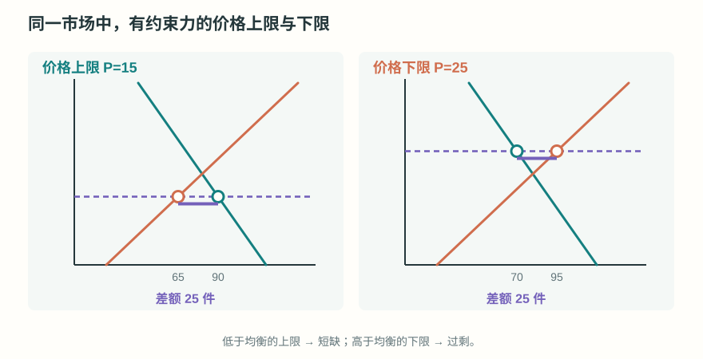
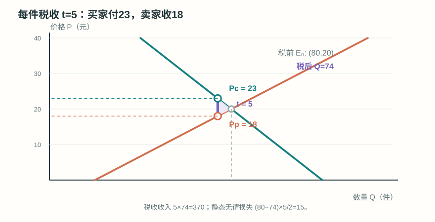

CHAPTER 07 · MICROECONOMICS
政府政策：税收、补贴与管制
政策可以改变价格，但要区分法律规则、市场行为以及福利结果。
把政策目标转化成可分析的市场限制
保护租户、维持农业收入、筹措公共服务资金，都是可以讨论的政策目标。但“希望帮助谁”和“价格机制会如何变化”不是同一命题。政策分析从识别法律约束、行为反应、市场结果和社会福利四个层次开始。
为保证前五章的知识可以接续使用，继续采用假设市场 Qd=120−2P、Qs=20+3P，均衡价格为20元，数量80件。下面的所有计算均是一个竞争市场的静态教学模型，不是房租、最低工资或农业政策的现实定量预测。
价格上限：便宜了，不代表每个人都能买到
价格上限（price ceiling）规定交易价格的最高值。若该上限高于市场自然出清价20元，就没有约束作用；假如规定价格不得超过15元，买家计划需求 Qd=120−2×15=90 件，卖家计划供给 Qs=20+3×15=65 件。结果是 25件超额需求。
此时不能把“需求量90”写成“实际销售90”。若没有库存或其他供货渠道，成交最多65件，谁买到可能取决于排队、分配规则、熟人关系或交易成本。低价对买到商品的人有利，但无法买到的人未必受益；长远还可能影响产品质量和新增供给。

| 情形 | 市场价格 | 买方需求 | 卖方供给 | 超额需求或供给 |
|---|---|---|---|---|
| 无限制均衡 | 20 | 80 | 80 | 0 |
| 约束上限 | 15 | 90 | 65 | 短缺25 |
| 约束下限 | 25 | 70 | 95 | 过剩25 |
价格下限：卖得更贵，不等于卖得更多
价格下限（price floor）规定交易不得低于某个价格。低于均衡价的下限在本模型中不会限制交易，但价格下限如果定在25元，则需求 Qd=70、供给 Qs=95，出现 25件超额供给。卖家愿意生产95件，不意味着95件都能找到买家。
政府若承诺收购未售商品，会引入财政成本和库存处理；如果没有收购，一些卖家可能没有交易机会。将最低工资视为劳动“价格下限”是有用的起点，但劳动力市场存在招聘摩擦、工资议价、雇主市场势力和岗位质量调整等机制，不能机械地把商品市场的超额供给映射成失业人数。现实政策效果须依靠具体情境与可信实证。
单位税：法律缴纳人和经济承担人不是一回事
对每件成交商品征收5元从量税，假设法律指定由卖家缴纳。征税后的买方支付价格 Pc 必须比卖家税后净收价格 Pp 高5元，写为 Pc=Pp+5。需求取决于买方支付价，供给取决于卖家净到手价：
解得卖家净收 Pp=18元，买家支付 Pc=23元，交易数量 Q=74件。税前买方与卖方价格均为20元；现在买方多付3元，卖方少收2元。虽然法律缴税方是卖家，经济税负仍由两边按价格反应分担。在这个没有征税执行差异的竞争模型中，将法定缴税责任改到买方不会改变最终税楔和成交量。

| 税率 t | 买方价 Pc | 卖方净价 Pp | 交易量 Q | 税收收入 tQ |
|---|---|---|---|---|
| 0 | 20 | 20 | 80 | 0 |
| 5 | 23 | 18 | 74 | 370 |
| 10 | 26 | 16 | 68 | 680 |
税收收入不是无谓损失：福利计算要分清
税率5元、成交74件时，政府税收收入为5×74=370元。这是一种从买卖双方转移至政府的资源，并不是同样大小的社会损失。由于交易量由80降至74，原本双方都可能获益的6件交易没有发生。如果排除外部性、执行成本等因素，损失的总剩余等于税楔三角形：
若该商品产生污染等未计入私人价格的社会成本，矫正性税可能提高而非降低社会福利。因此不能看到税后成交量减少就断言政策失效。分析时要同时考虑外部收益或成本、政府如何使用税收、财政再分配和行政成本。
补贴的基本机制与税相反：它在政府支付补贴时扩大买卖价格之间的差额，可能使生产者收到的有效价格高于消费者支付价。补贴也不能直接等于社会净收益；如果没有市场失灵矫正理由，过度交易同样可能造成福利损失。
税楔计算器与反事实问题
每件税收实验室
保持 Qd=120−2Pc，Qs=20+3Pp；滑动从量税 t。每次调整都同时满足供求出清与 Pc=Pp+t。
t=5，Pc=23，Pp=18，Q=74，税收收入370，无谓损失15。
在这组线性函数中，买方每一元税负增加0.6元，卖方净收减少0.4元。并非通用税负比例。
如果每件税率提高至10元，买卖双方价格、成交数量、无谓损失分别是什么？
查看解析
Pp=16、Pc=26、Q=68。税收收入10×68=680；与原Q80相比减少12件，DWL=(1/2)×10×12=60。别把680当成无谓损失。
下一章将政府政策对价格的影响，带入消费者自身的预算约束和效用选择。
参考资料与假设边界
所有数字与图形均由同一组假设线性供需函数推导，不是对真实政策成效的估计；图解独立绘制。可进一步核对：